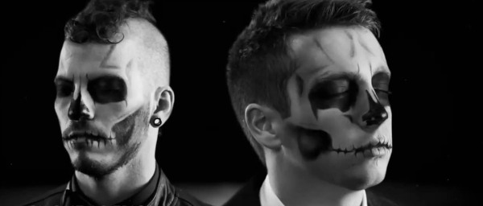

Introdução
Twenty One Pilots (estilizado como Twenty Øne Piløts) é um duo americano originário de Columbus, Ohio. A banda foi formada em 2009 pelo vocalista Tyler Joseph junto com Nick Thomas e Chris Salih, ambos saíram da banda em 2011. Após a partida dos dois integrantes, a banda é composta desde então por Tyler e Josh Dun. Eles lançaram dois álbuns independentes, Twenty One Pilots, em 2009 e Regional at Best, em 2011, antes de assinarem com a gravadora Fueled by Ramen, em 2012. Seu primeiro álbum com esta gravadora, Vessel, foi lançado em 2013 e se tornou o segundo álbum da banda e na história em que cada faixa recebeu pelo menos uma certificação de ouro, fazendo do Twenty One Pilots a primeira banda na história da música a ter cada canção em dois álbuns a ganhar prêmios de ouro ou platina. O duo alcançou um grande sucesso com seu quarto álbum de estúdio, Blurryface, que produziu os singles de sucesso "Stressed Out" e "Ride" e se tornou o primeiro álbum em que cada faixa recebeu pelo menos uma certificação de ouro da Recording Industry Association of America. O lançamento do single "Heathens" também fez do grupo o primeiro artista alternativo da história a ter dois singles simultâneos na Billboard Hot 100 e o terceiro ato de rock na história a ter dois singles simultaneamente no top 5 da Billboard, juntando-se aos Beatles e Elvis Presley. Atualmente, o duo já lançou sete álbuns de estúdio no total, sendo o mais recente, Clancy lançado em 24 de maio de 2024.
2009 – 2011: Formação e álbum auto-intitulado
A banda foi formada em 2009, em Columbus, Ohio, por amigos de faculdade. Eles eram: Tyler Joseph, Nick Thomas, Chris Salih. Tyler Joseph teve a ideia do nome da banda enquanto estudava "All My Sons", uma peça de Arthur Miller que contava a história de um homem que deve decidir o que é melhor para sua família depois de causar a morte de 21 pilotos durante a Segunda Guerra Mundial, porque ele conscientemente os enviou peças defeituosas para o bem de seu negócio. Josh Dun explicou que esta história de dilema moral foi a inspiração para o nome da banda. Em 29 de dezembro de 2009, eles lançaram seu álbum de estreia, intitulado Twenty One Pilots, e começaram um tour em Ohio. Em 2010, a banda lançou duas faixas inéditas oficialmente em sua conta no SoundCloud. Estas faixas incluíram um spin-off original de "Time to Say Goodbye", de Andrea Bocelli e Sarah Brightman, e um cover de "Jar of Hearts", de Christina Perri. Eles estavam originalmente disponíveis para download gratuito, embora a opção tenha sido removida desde então. Chris Salih saiu da banda em 8 de maio de 2011, e Nick Thomas também saiu em aproximadamente um mês depois, em 3 de junho de 2011. Os dois se despediram dos fãs na página oficial da banda no Facebook. Então, Tyler Joseph se juntou a Josh Dun, ex-baterista da banda House of Heroes.
2011 – 2012: Mudanças de programação e Regional at Best
Seu segundo álbum, intitulado Regional at Best, foi lançado 08 de julho de 2011, com a nova formação constituída apenas por Tyler Joseph e Josh Dun. Em novembro de 2011, eles fizeram um show que esgotou ingressos na Columbus' Newport Music Hall, atraindo a atenção de várias gravadoras. Embora muitas gravadoras tenham brigado pela banda, Tyler Joseph e Josh Dun decidiram assinar com a Atlantic Records pelo subsidiário Fueled by Ramen. Em 11 de fevereiro de 2012, a banda lançou um vídeo-clipe no YouTube para uma música "Goner", lançada previamente no álbum solo "No pun intended" lançado em 2007 por Tyler Joseph, vocalista da banda. "Goner" foi reescrita e re-gravada para ser lançada no álbum Blurryface, em 2015.

2012 – 2014: Assinatura de gravadora principal e Vessel
Em abril de 2012, em um show com ingressos esgotados no Lifestyle Communities Pavilion, eles anunciaram seu contrato com a gravadora subsidiária da Atlantic Records, Fueled by Ramen. Em 17 de julho de 2012, eles lançaram sua primeira gravação na Fueled by Ramen em forma de um EP com três músicas, intitulado Three Songs. Em agosto de 2012, eles embarcaram em uma pequena turnê com Neon Trees e Walk the Moon. Eles trabalharam com Greg Wells, (produtor de Adele e Katy Perry) em seu primeiro álbum full-length na gravadora Fueled by Ramen, Vessel, lançado no dia 8 de janeiro de 2013. Em 12 de novembro de 2012, o clipe oficial da música "Holding on to You" foi lançado no YouTube. Sequencialmente, em 2013, o clipe das músicas "Guns for Hands" e "Car Radio" foram lançados no dia 7 de janeiro e 19 de abril, respectivamente. Em maio de 2013, a banda Fall Out Boy anunciou que Twenty One Pilots estaria em uma turnê abrindo shows no Save Rock and Roll no outono seguinte. Em 8 de agosto de 2013, Twenty One Pilots apresentou "House of Gold" em Conan na noite de sua estreia.
Em 2 de outubro de 2013, o clipe da música foi lançado no YouTube. Em 24 de dezembro de 2013, véspera de Natal, Tyler Joseph participou e cantou "O come, O come, Emmanuel" na Five14 Church's Christmas With the Stars, em New Albany, em Ohio. O clipe oficial da apresentação foi lançado no YouTube em 14 de fevereiro de 2014. Ainda em dezembro de 2013, o clipe oficial da música "Migraine" foi lançado no YouTube e no Vimeo. No entanto, ambos foram eliminados pouco depois devido a problemas com a gravadora. Em 17 de março, a banda tocou na Woodie Awards da mtvU durante o SXSW. A versão atualizada da música "Lovely" foi encontrada nas faixas bônus de Vessel, que se tornou disponível apenas no Reino Unido. Foi um remake de maior qualidade da música, de Regional at Best. No início de 2014, a banda começou a tomar espaço no mainstream e provou estar em demanda com festivais de música e outros eventos, como Lollapalooza, Bonnaroo, Boston Calling e Firefly. Como resultado, eles receberam pedidos de show de diferentes cidades, o que os levaram para a Quiet Is Violent World Tour, com início em setembro de 2014. Em 13 de abril de 2014, Twenty One Pilots apresentou "Car Radio" no MTV Movie Awards de 2014.[18] No dia 28 de abril de 2014, a banda tocou "Car Radio" no Late Night with Seth Meyers. Em 31 de dezembro de 2014, a banda lançou um clipe para a música "Ode to Sleep".
2015 – 2017: Blurryface
Em 16 de março de 2015, a banda anunciou que o álbum Blurryface seria lançado em 19 de maio. Eles também lançaram seu primeiro single, "Fairly Local". Seu segundo single do álbum, "Tear In My Heart", e clipe do mesmo foram lançados em 5 de abril de 2015. Em 28 de abril de 2015, "Stressed Out", o terceiro single do álbum, foi lançado juntamente com seu clipe oficial. O álbum Blurryface foi lançado quatro dias mais cedo do que estava previsto, em 15 de maio de 2015, e vendeu mais de 134.000 cópias na primeira semana. Este foi o primeiro álbum número 1 de Twenty One Pilots na Billboard 200.

A banda começou a turnê Blurryface World Tour em 11 de maio de 2015, em Glasgow, na Escócia. As bandas Echosmith e Finish Ticket os acompanharam na turnê. Twenty One Pilots tocou "Stressed Out" no Late Night with Seth Meyers em 14 de setembro de 2015. A música foi parte da lista de músicas da banda tocadas no Lollapalooza, em 2015. A banda começou sua turnê Emotional Roadshow World Tour, que começou em Cincinnati, Ohio, em 31 de maio de 2016. A turnê passou pelos Estados Unidos, Canadá, México, Europa e Austrália. Foi anunciado que as bandas Chef'Special e Mutemath juntariam-se a eles na turnê. Twenty One Pilots performou "Stressed Out" na Emotional Roadshow World Tour, em 2016, em Ohio. Tyler Joseph, o vocalista da banda, mudou as letras do primeiro verso, no entanto. Nas letras alteradas, ele falou sobre como os fãs da banda pensaram que a música era exagerada, e sobre o sucesso da música. Em 16 de junho de 2016, a banda lançou a música "Heathens", que integra a trilha sonora oficial do filme "Esquadrão Suicida", lançado em agosto de 2016. Em 21 de junho de 2016, um clipe da música foi lançado no YouTube. O clipe e a música tiveram uma recepção ótima por parte do público e da crítica, e, em menos de 2 dias de lançamento, o clipe já havia alcançado mais de 100 milhões de visualizações e ficou em quinto lugar na Billboard Hot 100. Em março de 2018, a música "Hometown" recebeu uma certificação de Ouro da RIAA, tornando Blurryface o primeiro álbum completo a ter todas as faixas atingindo pelo menos o status de ouro.
2018 – 2020: Trench e Level of Concern
Em julho de 2018, Twenty One Pilots quebrou o silêncio de um ano ao enviar um e-mail secreto para os fãs e, dias depois, postando um vídeo em todas as plataformas de redes sociais, junto com um novo logotipo amarelo. Em 11 de julho de 2018, a banda lançou duas novas músicas intituladas "Jumpsuit" e "Nico and the Niners", seguido pelo anúncio do quinto álbum de estúdio, Trench, lançado em 5 de outubro de 2018, e a nova turnê mundial, chamada "The Bandito Tour", começando em 16 de outubro.

Em 12 de setembro de 2018, Twenty One Pilots fez seu primeiro show ao vivo em mais de um ano na Brixton Academy, em Londres, apresentando as quatro músicas lançadas do álbum Trench, assim como algumas músicas de seus álbuns anteriores para promover o álbum e a futura "The Bandito Tour". No ano de 2019, a "Bandito Tour" foi encerrada. os seus últimos shows foram em Colombus, Ohio. Em um dos shows, a banda tocou uma música que já havia sido retirada da setlits, "Hometown", do álbum Blurryface. Esta música foi escolhida para este show por eles estarem em casa, na sua "Hometown". Em 9 de abril de 2020, Twenty One Pilots lançou um single em relação a pandemia do novo coronavírus, chamado de "Level of Concern". Em 27 de junho de 2020, tendo vendido mais de 20 mil cópias em solo brasileiro, o single acabou se tornando o primeiro do duo a conquistar um Disco de Ouro no Brasil.
2021 – 2023: Scaled and Icy
Em 4 de março de 2019, cinco meses após o lançamento de seu quinto álbum de estúdio, Trench, a banda confirmou que estava trabalhando em seu próximo álbum de estúdio. Sobre o possível tema, Joseph disse: "há um personagem que ainda não foi falado em nenhum álbum que desempenha um papel enorme na narrativa que obviamente precisará ser falado e provavelmente é para onde vamos a seguir". Em 9 de abril de 2020, a dupla lançou a música "Level of Concern", que marcou a primeira produção musical da dupla desde o lançamento de Trench. “Level of Concern” faz referência à ansiedade induzida pela pandemia do COVID-19, e o videoclipe que o acompanha foi filmado nas casas de Joseph e Dun enquanto estavam trancados devido à pandemia. Joseph direcionou uma parte dos lucros da música para a Crew Nation, uma instituição de caridade para equipes de música ao vivo que não podem ser pagas durante a quarentena internacional. Em novembro de 2020, Dun revelou que eles ainda estavam trabalhando "remotamente" no álbum, com os dois membros em locais diferentes. Ele descreveu o processo de gravação: "nós dois temos nossos próprios estúdios, o que é muito bom, então ele vem com um monte de coisas em seu estúdio, envia para mim, e então eu faço algumas coisas aqui no meu estúdio e, em seguida, enviá-lo de volta".

Em 8 de dezembro de 2020, a banda lançou um single de Natal, "Christmas Saves the Year", seguindo uma transmissão do Twitch por Joseph. O sexto álbum de estúdio da dupla, Scaled and Icy, foi lançado em 21 de maio de 2021. O nome do álbum é um anagrama, que significa "Clancy está morto", e é uma brincadeira com a frase "scaled back and isolated", escrita por Joseph. O álbum foi divulgado pela primeira vez em 6 de abril de 2021 através do dmaorg.info - um site que a banda usa para compartilhar conhecimento - por meio de um pôster incluindo o texto "Novo álbum e experiência de transmissão ao vivo". O álbum foi anunciado oficialmente pela banda um dia depois. O primeiro single do álbum "Shy Away" foi lançado no mesmo dia, junto com um videoclipe. O segundo single do álbum, "Choker", foi lançado em 30 de abril de 2021, juntamente com um videoclipe. O terceiro single do álbum, "Saturday", foi lançado em 18 de maio de 2021.
2024 – presente: Clancy
Em 15 de fevereiro de 2024, a arte da capa de Vessel, Blurryface, Trench e Scaled and Icy foram atualizadas para serem parcialmente cobertas por fitas vermelhas nas plataformas de streaming. Várias pessoas postaram nas redes sociais que haviam recebido correspondências da banda, e um novo logotipo foi revelado através de outdoors e pôsteres em vários locais do mundo nos dias seguintes, sugerindo um novo álbum que estava por vir. Em 22 de fevereiro, um vídeo narrado foi lançado nas plataformas de mídia social da banda, onde detalhes sobre a história dos três álbuns anteriores foram confirmados em antecipação ao próximo álbum. No dia 28 de fevereiro, a banda anunciou o lançamento de um novo single intitulado "Overcompensate", que foi lançado acompanhado de um videoclipe no dia seguinte. Junto do single, foi anunciado o próximo álbum, Clancy, com o lançamento previsto para o dia 17 de maio.